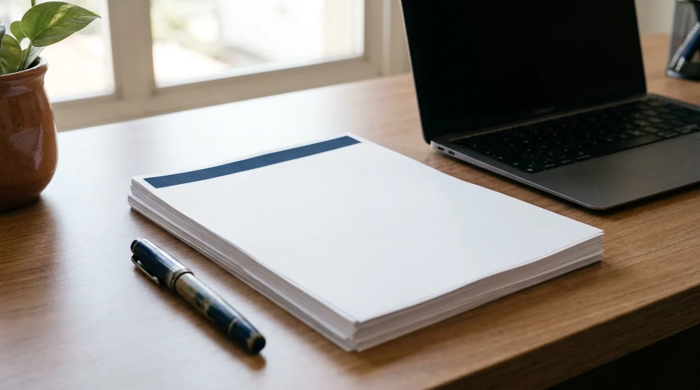

Papel Timbrado para Advogado: Modelos e Regras da OAB
O juiz abre a petição inicial e, antes da primeira linha do pedido, já formou uma impressão. O cliente recebe a proposta de honorários e, antes de ler o valor, repara no cabeçalho. Em ambos os casos, quem fala primeiro é o papel timbrado, e ele já dá pistas sobre o cuidado da banca com o que entrega.
Muita banca trata o papel timbrado como formalidade. Só que ele aparece em petições, pareceres, contratos, procurações e propostas, e poucas peças do escritório circulam tanto.
Este guia mostra o que a OAB exige no papel timbrado, o que o Código de Ética e o Provimento 205/2021 vedam e como montar um modelo sóbrio, com um exemplo pronto para copiar. Também cobre versões para Word, PDF e peticionamento eletrônico e os erros mais comuns.
O que é papel timbrado e por que ele pesa na advocacia
Papel timbrado é o modelo de documento com a identificação fixa do escritório: nome, inscrição na OAB, logotipo e dados de contato, em geral no cabeçalho e no rodapé. Hoje, quase sempre, é um arquivo digital.
Onde o timbrado aparece no dia a dia
Na petição, os leitores são o magistrado e o servidor do cartório. Na proposta e no contrato de honorários, quem lê é alguém decidindo se contrata.
Como tanta gente de fora vê esses documentos, o papel timbrado funciona como peça de identidade visual. Se o site tem uma cor, o cartão outra e a petição uma terceira, o escritório parece três negócios diferentes. O mesmo raciocínio orienta o nosso guia de identidade visual para escritório, do qual o timbrado faz parte.
O que o timbrado comunica sem dizer nada
Um papel timbrado bem feito mostra que existe uma estrutura por trás do advogado, mesmo quando ele atua sozinho, e que o escritório responde pelo que assina. Já cabeçalho pixelado, logotipo esticado e fontes misturadas transmitem desleixo antes de qualquer argumento. Nenhum juiz decide pela estética. Mas quem lê dezenas de petições por dia termina mais rápido, e com menos irritação, a que está limpa.

O que a OAB exige e permite no papel timbrado de advogado
Três normas definem o assunto: o Estatuto da Advocacia (Lei 8.906/1994), o Código de Ética e Disciplina (CED) e o Provimento 205/2021 do Conselho Federal.
O mínimo obrigatório: nome e número de inscrição
O ponto de partida é o Estatuto da Advocacia. O art. 14 torna obrigatória a indicação do nome e do número de inscrição em todos os documentos assinados pelo advogado no exercício da atividade. O parágrafo único veda usar a expressão "escritório de advocacia" sem o nome e a inscrição dos advogados ou o registro da sociedade.
O Código de Ética e Disciplina repete a exigência para o material de escritório. Segundo o art. 44, o advogado fará constar nos cartões e no material de escritório o seu nome ou o da sociedade e o número ou números de inscrição na OAB. Papel timbrado sem inscrição está incompleto, por mais bonito que seja.
Se a banca é uma sociedade, entra também o art. 16 do Estatuto. O caput proíbe denominação de fantasia, e o § 1º exige que a razão social tenha o nome de pelo menos um advogado responsável. Na sociedade unipessoal, a denominação é o nome do titular com a expressão "Sociedade Individual de Advocacia" (§ 4º). Portanto, o papel timbrado da sociedade mostra a razão social registrada e o número de registro na seccional.
O que pode entrar no cabeçalho e no rodapé
O § 1º do art. 44 do CED diz que "poderão ser referidos apenas" títulos acadêmicos, distinções honoríficas ligadas à profissão, instituições jurídicas de que o advogado faça parte, especialidades, endereço, e-mail, site, página eletrônica, QR code, logotipo, fotografia do escritório, horário de atendimento e idiomas. Como a lista começa com "apenas", ela funciona como teto.
O telefone, que não aparece nela, é autorizado pelo Provimento 205/2021, norma mais recente. No Anexo Único, o item sobre petições, papéis, pastas e materiais de escritório prevê nome e nome social do advogado e da sociedade, endereço físico e eletrônico, telefone e logotipo. O art. 5º, § 2º, ainda permite que o escritório use a própria logomarca e a identidade visual nos meios de comunicação profissional. Para uma leitura completa da norma, veja o nosso guia do Provimento OAB 205/2021.
| Elemento | Situação | Fundamento |
|---|---|---|
| Nome do advogado ou razão social | Obrigatório | Estatuto, art. 14; CED, art. 44 |
| Número de inscrição na OAB (ou registro da sociedade) | Obrigatório | Estatuto, art. 14; CED, art. 44 |
| Endereço, e-mail e site | Permitido | CED, art. 44, § 1º; Provimento 205/2021, Anexo Único |
| Telefone | Permitido | Provimento 205/2021, Anexo Único |
| Logotipo e QR code | Permitido | CED, art. 44, § 1º; Provimento 205/2021, art. 5º, § 2º |
| Títulos acadêmicos e especialidades | Permitido, se verdadeiros e comprováveis | CED, art. 44, § 1º; Provimento 205/2021, arts. 3º, III, e 4º, § 1º |
| Emprego, cargo ou função (exceto professor universitário) | Evitar | CED, art. 44, § 2º (regra do cartão, aplicada por prudência) |
| Valores, descontos ou gratuidade | Vedado como chamada fixa do timbrado | Provimento 205/2021, art. 3º, I |
| Símbolos oficiais da OAB | Vedado | Provimento 205/2021, art. 5º, § 2º |
O que fica de fora
O art. 3º do Provimento 205/2021 exige publicidade informativa, discreta e sóbria. Daí saem as vedações que mais pesam no papel timbrado. Não cabe referência a valores de honorários, forma de pagamento, gratuidade ou descontos como forma de captar clientes (inciso I). Também não cabem expressões persuasivas, de autoengrandecimento ou de comparação (inciso IV), como "o melhor escritório da cidade" ou "vitória garantida".
Especialidade só entra com título certificado ou notória especialização, conforme o inciso III. E o mesmo art. 5º, § 2º, que libera a marca do escritório, veda o uso da logomarca e dos símbolos oficiais da OAB. Na mesma linha, o CED, no art. 44, § 2º, veda nos cartões de visita fotografias pessoais ou de terceiros e a menção a qualquer emprego, cargo ou função, atual ou passada, em qualquer órgão ou instituição, salvo a de professor universitário. A regra foi escrita para o cartão, mas estender o cuidado ao papel timbrado é o caminho prudente.
Atenção: nenhuma norma da OAB fala em brasões. Ainda assim, logotipo que imita brasão, selo ou emblema de órgão público pode sugerir um vínculo oficial que não existe, e o Provimento 205/2021 veda informação capaz de induzir a erro (art. 3º, II). Balança, coluna e martelo não têm vedação expressa, desde que não pareçam carimbo de repartição.
Como criar um papel timbrado: elementos, tipografia, cores e margens
Com as regras claras, o trabalho vira design: um documento que se lê sem esforço e identifica a banca na primeira olhada.
Os elementos e a hierarquia
Um timbrado de escritório de advocacia bem resolvido costuma ter três zonas. No cabeçalho, o logotipo e o nome, com peso visual moderado. No meio da página, espaço livre para o texto, sem marcas d'água pesadas. No rodapé, os dados de contato e a inscrição, em letra menor.
O texto jurídico é o protagonista, então o cabeçalho não deve ocupar um quarto da página. Se ainda não tem uma marca sólida, comece pelo nosso guia de logo para advogado antes de desenhar o timbrado.
Tipografia e cores com sobriedade
Escolha no máximo duas famílias de fonte: uma para o nome do escritório e outra para o texto. Fontes clássicas e legíveis funcionam bem, com ou sem serifa. O essencial é que a fonte esteja instalada em todos os computadores da equipe, ou embutida no arquivo. No Word para Windows, marque Arquivo > Opções > Salvar > Incorporar fontes no arquivo.
Tamanho entre 11 e 12 pontos e entrelinha de 1,5 são escolhas comuns na praxe forense, e não exigências legais. Alguns tribunais têm orientações próprias; confira as do seu.
A cor deve vir da identidade visual da banca. Uma cor principal, usada em linhas finas de separação, no logotipo ou no nome, costuma bastar. O restante fica em preto ou cinza-escuro, que imprime bem e fotocopia sem perder legibilidade. Degradês e fundos coloridos atrapalham a digitalização e contrariam a sobriedade do art. 3º do Provimento.
Formato A4 e margens
O formato mais usado é o A4 (210 × 297 mm). Nenhuma lei obriga a aplicar às petições as normas da ABNT para trabalhos acadêmicos. Muitos escritórios, porém, adotam margens próximas dessa referência: cerca de 3 cm à esquerda e no topo; 2 cm à direita e embaixo. A esquerda maior deixa espaço para grampear.
No Word, coloque o logotipo e os dados dentro da área de cabeçalho e rodapé (Inserir > Cabeçalho > Editar cabeçalho), e não no corpo do documento. Depois, em Layout > Margens > Margens personalizadas, aumente a margem superior até o cabeçalho caber com folga. Assim o texto nunca invade o logotipo e a numeração de páginas não colide com o endereço.
Modelo de papel timbrado pronto para copiar
Use esta especificação como ponto de partida e ajuste à sua marca. Os nomes e números abaixo são fictícios.
- Página: A4, margens de 3 cm à esquerda e no topo; 2 cm à direita e embaixo.
- Cabeçalho: logotipo à esquerda; à direita, "SILVA & SOUZA ADVOGADOS", em 11 pontos, na cor da marca.
- Texto: fonte de leitura em 12 pontos, entrelinha 1,5, sem marca d'água.
- Rodapé, linha 1: Silva & Souza Sociedade de Advogados · Registro OAB/UF nº 0.000 · Dr. João Silva, OAB/UF 00.000 · Dra. Ana Souza, OAB/UF 00.000.
- Rodapé, linha 2: Rua Exemplo, 100, sala 501, Cidade/UF · (00) 0000-0000 · contato@exemplo.adv.br · exemplo.adv.br.
- Numeração: canto inferior direito, fora das linhas de contato.
O advogado autônomo troca a razão social pelo próprio nome e inscrição. E repare no que não está no modelo: nada de "consulta gratuita", "especialista em tudo" ou "o escritório que mais vence".
Se o seu escritório ainda não tem uma identidade visual coerente, esse modelo é um bom ponto de partida, porque obriga a decidir fonte, cor e hierarquia. A JuriDigital ajuda bancas a transformar essas decisões numa marca consistente dentro das regras da OAB, do timbrado ao cartão.
Versões do timbrado para Word, PDF e peticionamento eletrônico
Um papel timbrado perfeito no Word pode quebrar no PDF ou no sistema do tribunal. Por isso ele precisa de versões.
Word, Google Docs e PDF
O papel timbrado deve existir como arquivo de modelo, e não como um documento que cada um copia e edita. No Word, monte o papel timbrado uma vez, defina os estilos de título, texto, citação e lista (Página Inicial > Estilos) e salve em Arquivo > Salvar como > Modelo do Word (.dotx). No Google Docs, quem usa Google Workspace pode publicar o modelo na galeria da organização; em conta pessoal, mantenha um arquivo-mestre só de leitura e use Arquivo > Fazer uma cópia.
Para enviar ao cliente ou protocolar, gere sempre o PDF a partir do modelo. No leitor de PDF, abra Arquivo > Propriedades > Fontes: cada fonte deve aparecer como incorporada. Um logotipo exportado sem cuidado, repetido em cada página, multiplica o tamanho do arquivo.
Versão para peticionamento eletrônico
Pela Resolução 185/2013 do Conselho Nacional de Justiça (CNJ), art. 13, § 1º, o PJe (Processo Judicial Eletrônico) só aceita arquivos nos formatos definidos pelo CNJ e com tamanho máximo fixado por cada tribunal, limite que não pode ser inferior a 1,5 MB. Outros sistemas, como eproc e e-SAJ, têm limites próprios.
Mantenha, então, uma versão leve do papel timbrado para protocolo, sem marca d'água e sem fundo. O logotipo pode ir em vetor (formatos como SVG ou EMF, que não perdem nitidez ao ampliar) ou numa imagem otimizada. A assinatura digital com certificado ICP-Brasil, a infraestrutura oficial de certificação do país, completa o pacote. A Lei 11.419/2006 considera originais os documentos produzidos eletronicamente com garantia de origem e signatário (art. 11). Se ainda não tem o seu, veja o guia de certificado digital para advogado.
| Modelo de papel timbrado | Uso principal | Características |
|---|---|---|
| Timbrado completo | Propostas, pareceres, contratos com cliente | Logotipo em cor, cabeçalho e rodapé completos, QR code opcional para o site ou o cartão de contato |
| Timbrado para peticionamento | Petições e manifestações no processo eletrônico | Arquivo leve, logotipo otimizado, sem fundo nem marca d'água |
| Timbrado de correspondência | Notificações, ofícios, cartas a clientes | Cabeçalho compacto, espaço para destinatário e referência |
| Timbrado para procuração | Procurações e substabelecimentos | Dados completos do advogado e da sociedade, layout enxuto |
| Versão monocromática | Impressão em preto e fotocópia | Mesmo desenho, sem cor, contraste garantido |
Sobre a procuração, o CPC, no art. 105, § 2º, exige que a procuração contenha o nome do advogado, o número de inscrição na OAB e o endereço completo. O § 3º acrescenta nome, registro e endereço da sociedade, quando o outorgado a integrar. Um modelo de papel timbrado com esses dados evita esquecimento.
Na prática: crie as versões de uma vez só, com o mesmo desenho. O cliente que recebe a proposta em cores e depois vê a petição em preto precisa reconhecer o mesmo escritório nas duas.
Se quiser uma revisão do conjunto, do timbrado ao site, fale com um especialista da JuriDigital e veja por onde começar.
Erros comuns no timbrado de escritório de advocacia e próximos passos
Erros de conteúdo
O primeiro é esquecer a inscrição na OAB ou colocar só a da sociedade quando quem assina é o advogado. O Estatuto pede nome e inscrição em todo documento assinado. Outro deslize comum é listar especialidades sem título que as sustente, o que o Provimento veda no art. 3º, III.
Também aparecem frases de efeito no rodapé, do tipo "compromisso com a vitória", que esbarram na vedação a expressões persuasivas. O mesmo vale para "consulta gratuita" ou "parcelamos em 10x" impressos como chamada fixa no cabeçalho ou no rodapé. Na proposta enviada ao cliente, o valor e as condições entram no texto do documento, não no timbrado.
Dica: revise o papel timbrado sempre que mudar endereço, telefone, sócio ou marca, e marque na agenda uma conferência anual. Um dado de contato errado numa procuração gera retrabalho e pode atrasar comunicações com o cartório e com o cliente.
Erros de forma e de governança
Do lado visual, o campeão é o logotipo esticado ou pixelado. Logo atrás vêm a marca d'água que atrapalha a leitura e as fontes misturadas.
Há ainda o erro de governança: cada advogado mantém a sua versão do papel timbrado. Com o tempo, circulam telefones antigos e logotipos de identidades anteriores. Para evitar isso, mantenha um único arquivo-mestre, com dono e data de revisão.
Erro de coerência: timbrado que não conversa com a marca
O último erro é tratar o papel timbrado como peça isolada: ele usa uma fonte, o cartão usa outra, a assinatura de e-mail uma terceira. Se você já seguiu o nosso guia de cartão de visita do advogado, use as mesmas cores, fontes e posição do logotipo.
Técnicas de visual law, como destaques, quadros-resumo e boa hierarquia de títulos, rendem mais sobre um papel timbrado limpo. Já um papel timbrado carregado disputa a atenção do leitor com o próprio argumento.
Próximos passos para padronizar o papel timbrado
Um bom papel timbrado não ganha causa, mas trabalha a seu favor em cada página que você assina: cumpre a exigência da OAB, facilita a leitura e mostra ao cliente que o escritório cuida dos detalhes. Se esse cuidado precisa chegar também ao site, às redes e à forma como a banca é encontrada, conheça o trabalho de marketing jurídico da JuriDigital.
Perguntas frequentes sobre papel timbrado para advogado
É obrigatório usar papel timbrado na petição?
Não existe lei que obrigue o uso de papel timbrado. O obrigatório é indicar nome e número de inscrição na OAB em todo documento assinado pelo advogado, conforme o art. 14 do Estatuto. O papel timbrado é a forma mais prática de cumprir essa exigência.
O que deve constar no papel timbrado de advogado?
Devem constar o nome do advogado (ou a razão social) e o número de inscrição na OAB (ou o registro da sociedade). Podem constar também endereço, telefone, e-mail, site, logotipo e QR code, conforme o CED (art. 44) e o Anexo Único do Provimento 205/2021.
Posso usar a balança da justiça ou o símbolo da OAB no timbrado?
A balança e outros símbolos genéricos do Direito não têm vedação expressa. Já a logomarca e os símbolos oficiais da OAB são vedados pelo art. 5º, § 2º, do Provimento 205/2021. Evite também desenhos que imitem brasões ou selos de órgãos públicos.
O papel timbrado precisa seguir as normas da ABNT?
Não. Nenhuma lei obriga a aplicar às petições as normas da ABNT para trabalhos acadêmicos. O formato A4 e margens de cerca de 3 cm à esquerda e no topo e 2 cm à direita e embaixo são praxe. Confira se o seu tribunal tem orientação própria.
Posso colocar especialidades e títulos no timbrado?
Pode, desde que sejam verdadeiros e comprováveis. O CED admite títulos e especialidades (art. 44, § 1º). O Provimento 205/2021 veda especialidade sem título certificado ou notória especialização (art. 3º, III) e exige comprovação quando a OAB pedir (art. 4º, § 1º).
Qual o melhor formato de arquivo para o timbrado?
Um modelo editável (.dotx no Word ou modelo no Google Docs), do qual se gera o PDF para envio e protocolo. Para o processo eletrônico, use uma versão leve, porque cada tribunal define o tamanho máximo aceito.